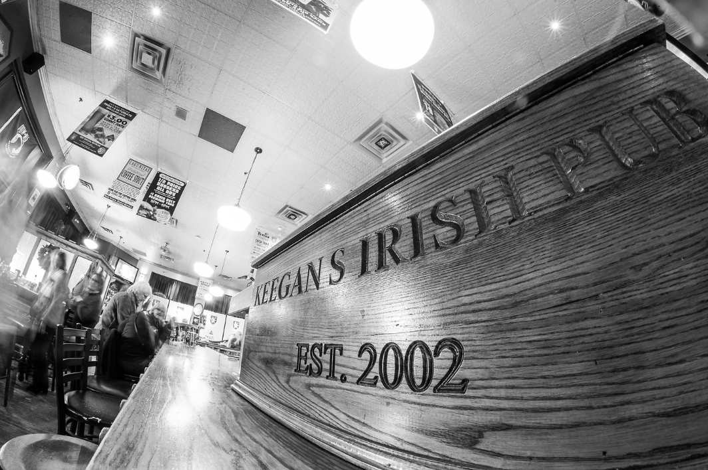
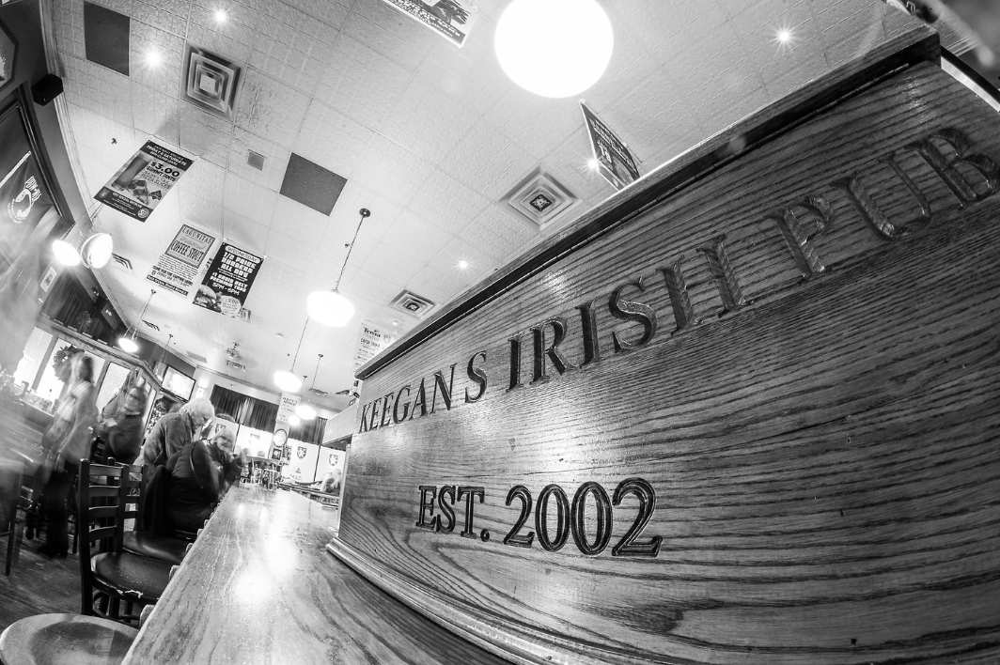

| HOME | MENU | ABOUT | EVENTS |
|---|

 

The story of Keegan’s Irish Pub begins in Ireland.
The pub was designed and built by the O’Sullivans, a third-generation
family of Irish pub builders from Waterford, Ireland. They came over in 2001,
saw the space, and then replicated a Victorian-style pub. It was built in Ireland
and shipped to St. Paul, three months before opening.
In the time since, we have taken great pride in our offerings, especially our
perfect pints. Keegan’s Pub is honored year after year by Guinness for the way
we pour and serve our beer. All our Guinness comes from the St. James Gate brewery
in Dublin, Ireland and we pour it at the right temperature with the right nitrogen
to CO2 mixture.
Our perfect pours don’t stop with Guinness. We were honored in 2008 by Citysbest.AOL
for having the Best Beer in the Twin Cities.
Terry and Virginia Keegan, Marty Neumann and the entire staff welcome you to stop by,
enjoy good food and drink and, in good Irish tradition, entertain yourself by practicing
the fine art of conversation.
Phone: 612-252-0880
Email: info@keeganspub.com